6 2025 The Big LLM Architecture Comparison
-
It has been seven years since the original GPT architecture was developed.
- At first glance, looking back at GPT-2 (2019) and forward to DeepSeek V3 and Llama 4 (2024-2025), one might be surprised at how structurally similar these models still are.
- Sure, positional embeddings have evolved from absolute to rotational (RoPE),
- Multi-Head Attention has largely given way to Grouped-Query Attention,
- and the more efficient SwiGLU has replaced activation functions like GELU.
- But beneath these minor refinements, have we truly seen groundbreaking changes, or are we simply polishing the same architectural foundations?
- At first glance, looking back at GPT-2 (2019) and forward to DeepSeek V3 and Llama 4 (2024-2025), one might be surprised at how structurally similar these models still are.
-
Comparing LLMs to determine the key ingredients that contribute to their good (or not-so-good) performance is notoriously challenging: datasets, training techniques, and hyperparameters vary widely and are often not well documented.
- However, I think that there is still a lot of value in examining the structural changes of the architectures themselves to see what LLM developers are up to in 2025. (A subset of them are shown in Figure 1 below.)
-
So, in this article, rather than writing about benchmark performance or training algorithms, I will focus on the architectural developments that define today's flagship open models.
-
As you may remember, I wrote about multimodal LLMs not too long ago; in this article, I will focus on the text capabilities of recent models and leave the discussion of multimodal capabilities for another time.

1. DeepSeek V3/R1
-
As you have probably heard more than once by now, DeepSeek R1 made a big impact when it was released in January 2025. DeepSeek R1 is a reasoning model built on top of the DeepSeek V3 architecture, which was introduced in December 2024.
-
In this section, I’ll focus on two key architectural techniques introduced in DeepSeek V3 that improved its computational efficiency and distinguish it from many other LLMs:
- Multi-Head Latent Attention (MLA)
- Mixture-of-Experts (MoE)
1.1 Multi-Head Latent Attention (MLA)
-
Before discussing Multi-Head Latent Attention (MLA), let's briefly go over some background to motivate why it's used.
- For that, let's start with Grouped-Query Attention (GQA), which has become the new standard replacement for a more compute- and parameter-efficient alternative to Multi-Head Attention (MHA) in recent years.
-
So, here's a brief GQA summary. Unlike MHA, where each head also has its own set of keys and values, to reduce memory usage, GQA groups multiple heads to share the same key and value projections.
- For example, as further illustrated in Figure 2 below, if there are 2 key-value groups and 4 attention heads, then heads 1 and 2 might share one set of keys and values, while heads 3 and 4 share another. This reduces the total number of key and value computations, which leads to lower memory usage and improved efficiency (without noticeably affecting the modeling performance, according to ablation studies).
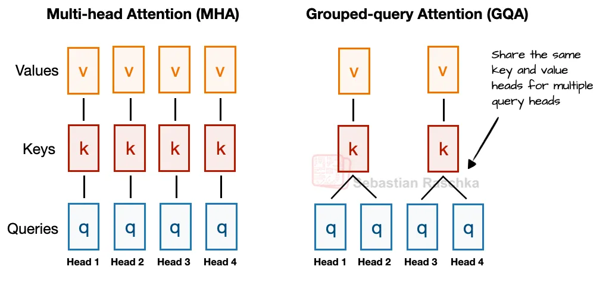
-
So, the core idea behind GQA is to reduce the number of key and value heads by sharing them across multiple query heads.
- This (1) lowers the model's parameter count
- and (2) reduces the memory bandwidth usage for key and value tensors during inference since fewer keys and values need to be stored and retrieved from the KV cache.
-
(If you are curious how GQA looks in code, see my GPT-2 to Llama 3 conversion guide for a version without KV cache and my KV-cache variant here)
-
While GQA is mainly a computational-efficiency workaround for MHA, ablation studies (such as those in the original GQA paper and the Llama 2 paper) show it performs comparably to standard MHA in terms of LLM modeling performance.
-
Now, Multi-Head Latent Attention (MLA) offers a different memory-saving strategy that also pairs particularly well with KV caching.
- Instead of sharing key and value heads like GQA, MLA compresses the key and value tensors into a lower-dimensional space before storing them in the KV cache.
-
At inference time, these compressed tensors are projected back to their original size before being used, as shown in the Figure 3 below. This adds an extra matrix multiplication but reduces memory usage.
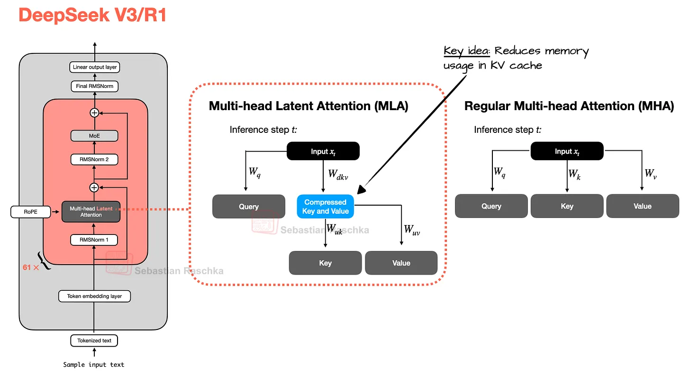
-
As a side note, the queries are also compressed, but only during training, not inference.
-
By the way, MLA is not new in DeepSeek V3, as its DeepSeek-V2 predecessor also used (and even introduced) it. Also, the V2 paper contains a few interesting ablation studies that may explain why the DeepSeek team chose MLA over GQA (see Figure 4 below).

-
As shown in Figure 4 above,
- GQA appears to perform worse than MHA,
- whereas MLA offers better modeling performance than MHA,
- which is likely why the DeepSeek team chose MLA over GQA. (It would have been interesting to see the "KV Cache per Token" savings comparison between MLA and GQA as well!)
-
To summarize this section before we move on to the next architecture component,
- MLA is a clever trick to reduce KV cache memory use while even slightly outperforming MHA in terms of modeling performance.
1.2 Mixture-of-Experts (MoE)
-
The other major architectural component in DeepSeek worth highlighting is its use of Mixture-of-Experts (MoE) layers.
- While DeepSeek did not invent MoE, it has seen a resurgence this year, and many of the architectures we will cover later also adopt it.
-
You are likely already familiar with MoE, but a quick recap may be helpful.
- The core idea in MoE is to replace each FeedForward module in a transformer block with multiple expert layers, where each of these expert layers is also a FeedForward module.
- This means that we swap a single FeedForward block for multiple FeedForward blocks, as illustrated in the Figure 5 below.
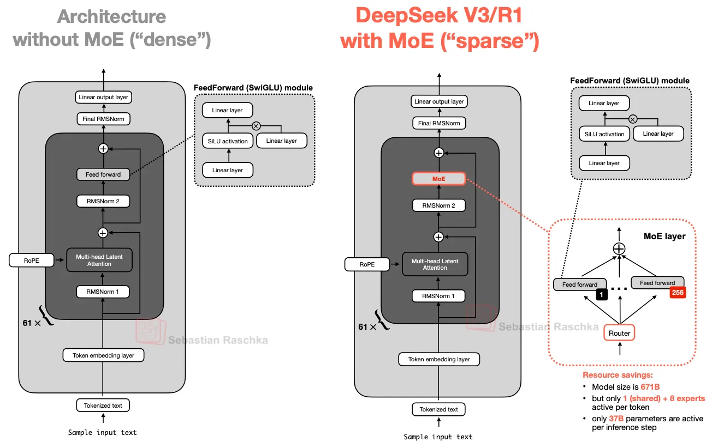
-
The FeedForward block inside a transformer block (shown as the dark gray block in the figure above) typically contains a large number of the model's total parameters. (Note that the transformer block, and thereby the FeedForward block, is repeated many times in an LLM; in the case of DeepSeek V3, 61 times.)
-
So, replacing a single FeedForward block with multiple FeedForward blocks (as done in a MoE setup) substantially increases the model's total parameter count.
- However, the key trick is that we don't use ("activate") all experts for every token. Instead, a router selects only a small subset of experts per token. (In the interest of time, or rather article space, I'll cover the router in more detail another time.)
-
Because only a few experts are active at a time, MoE modules are often referred to as sparse, in contrast to dense modules that always use the full parameter set.
- However, the large total number of parameters via an MoE increases the capacity of the LLM, which means it can take up more knowledge during training. The sparsity keeps inference efficient, though, as we don't use all the parameters at the same time.
-
For example, DeepSeek V3 has 256 experts per MoE module and a total of 671 billion parameters. Yet during inference, only 9 experts are active at a time (1 shared expert plus 8 selected by the router). This means just 37 billion parameters are used per inference step as opposed to all 671 billion.
-
One notable feature of DeepSeek V3's MoE design is the use of a shared expert. This is an expert that is always active for every token. This idea is not new and was already introduced in the DeepSeek 2024 MoE and 2022 DeepSpeedMoE papers.
- The benefit of having a shared expert was first noted in the DeepSpeedMoE paper, where they found that it boosts overall modeling performance compared to no shared experts. This is likely because common or repeated patterns don't have to be learned by multiple individual experts, which leaves them with more room for learning more specialized patterns.
1.3 DeepSeek Summary
-
To summarize, DeepSeek V3 is a massive 671-billion-parameter model that, at launch, outperformed other open-weight models, including the 405B Llama 3.
- Despite being larger, it is much more efficient at inference time thanks to its Mixture-of-Experts (MoE) architecture, which activates only a small subset of (just 37B) parameters per token.
-
Another key distinguishing feature is DeepSeek V3's use of Multi-Head Latent Attention (MLA) instead of Grouped-Query Attention (GQA).
- Both MLA and GQA are inference-efficient alternatives to standard Multi-Head Attention (MHA), particularly when using KV caching. While MLA is more complex to implement, a study in the DeepSeek-V2 paper has shown it delivers better modeling performance than GQA.
2. OLMo 2 (Allen Institute for AI)
-
The OLMo series of models by the non-profit Allen Institute for AI is noteworthy due to its transparency in terms of training data and code, as well as the relatively detailed technical reports.
-
While you probably won’t find OLMo models at the top of any benchmark or leaderboard, they are pretty clean and, more importantly, a great blueprint for developing LLMs, thanks to their transparency.
-
And while OLMo models are popular because of their transparency, they are not that bad either. In fact, at the time of release in January (before Llama 4, Gemma 3, and Qwen 3), OLMo 2 models were sitting at the Pareto frontier of compute to performance, as shown in Figure 7 below.

-
As mentioned earlier in this article, I aim to focus only on the LLM architecture details (not training or data) to keep it at a manageable length. So, what were the interesting architectural design choices in OLMo2? It mainly comes down to normalizations: the placement of RMSNorm layers as well as the addition of a QK-norm, which I will discuss below.
-
Another thing worth mentioning is that OLMo 2 still uses traditional Multi-Head Attention (MHA) instead of MLA or GQA.
2.1 Normalization Layer Placement
-
Overall, OLMo 2 largely follows the architecture of the original GPT model, similar to other contemporary LLMs. However, there are some noteworthy deviations. Let's start with the normalization layers.
-
Similar to Llama, Gemma, DeepSeek-V3, and most other LLMs, OLMo 2 switched from LayerNorm to RMSNorm.
-
But since RMSNorm is old hat (it's basically a simplified version of LayerNorm with fewer trainable parameters), I will skip the discussion of RMSNorm vs LayerNorm. (Curious readers can find an RMSNorm code implementation in my GPT-2 to Llama conversion guide.)
-
However, it's worth discussing the placement of the RMSNorm layer.
- The original transformer (from the "Attention is all you need" paper) placed the two normalization layers in the transformer block after the attention module and the FeedForward module, respectively. This is also known as Post-LN or Post-Norm.
-
GPT and most other LLMs that came after placed the normalization layers before the attention and FeedForward modules, which is known as Pre-LN or Pre-Norm. A comparison between Post- and Pre-Norm is shown in the figure below.
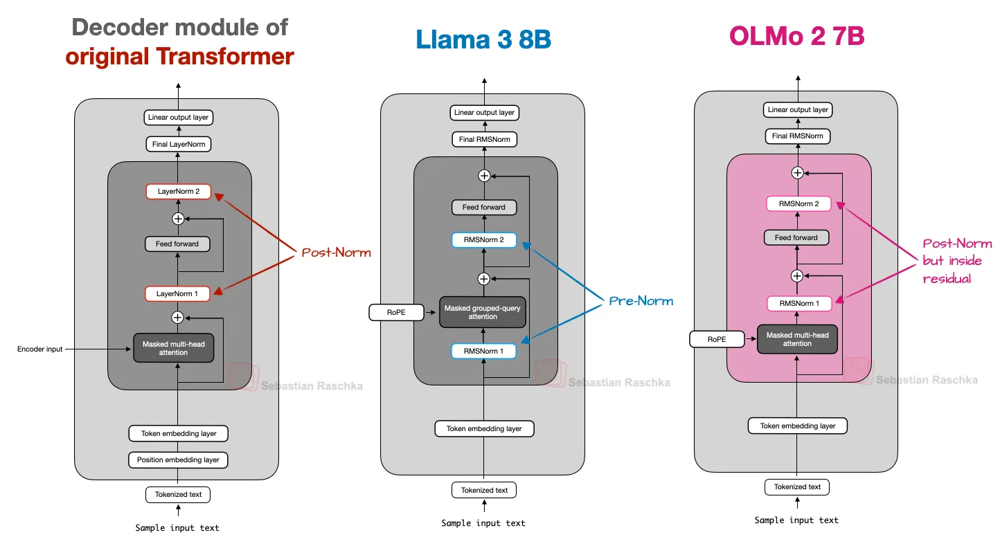
-
In 2020, Xiong et al. showed that Pre-LN results in more well-behaved gradients at initialization. Furthermore, the researchers mentioned that Pre-LN even works well without careful learning rate warm-up, which is otherwise a crucial tool for Post-LN.
-
Now, the reason I am mentioning that is that OLMo 2 adopted a form of Post-LN (but with RMSNorm instead of LayerNorm, so I am calling it Post-Norm).
-
In OLMo 2, instead of placing the normalization layers before the attention and FeedForward layers, they place them after, as shown in the figure above. However, notice that in contrast to the original transformer architecture, the normalization layers are still inside the residual layers (skip connections).
-
So, why did they move the position of the normalization layers? The reason is that it helped with training stability, as shown in the figure below.

- Unfortunately this figure shows the results of the reordering together with QK-Norm, which is a separate concept. So, it’s hard to tell how much the normalization layer reordering contributed by itself.
2.2 QK-Norm
-
Since the previous section already mentioned the QK-norm, and other LLMs we discuss later, such as Gemma 2 and Gemma 3, also use QK-norm, let's briefly discuss what this is.
-
QK-Norm is essentially yet another RMSNorm layer.
- It's placed inside the Multi-Head Attention (MHA) module and applied to the queries (q) and keys (k) before applying RoPE.
-
As mentioned earlier, together with Post-Norm, QK-Norm stabilizes the training. Note that QK-Norm was not invented by OLMo 2 but goes back to the 2023 Scaling Vision Transformers paper.
2.3 OLMo 2 Summary
- In short, the noteworthy OLMo 2 architecture design decisions are primarily
- the RMSNorm placements: RMSNorm after instead of before the attention and FeedForward modules (a flavor of Post-Norm),
- as well as the addition of RMSNorm for the queries and keys inside the attention mechanism (QK-Norm),
- which both, together, help stabilize the training loss.
3. Gemma 3 (Google DeepMind)
-
Google's Gemma models have always been really good, and I think they have always been a bit underhyped compared to other popular models, like the Llama series.
-
One of the distinguishing aspects of Gemma is the rather large vocabulary size (to support multiple languages better), and the stronger focus on the 27B size (versus 8B or 70B). But note that Gemma 2 also comes in smaller sizes: 1B, 4B, and 12B.
-
The 27B size hits a really nice sweet spot: it's much more capable than an 8B model but not as resource-intensive as a 70B model, and it runs just fine locally on my Mac Mini.
-
So, what else is interesting in Gemma 3? As discussed earlier, other models like Deepseek V3/R1 use a Mixture-of-Experts (MoE) architecture to reduce memory requirements at inference, given a fixed model size. (The MoE approach is also used by several other models we will discuss later.)
- Gemma 3 uses a different "trick" to reduce computational costs, namely sliding window attention.
3.1 Sliding Window Attention
- With sliding window attention (originally introduced in the LongFormer paper in 2020 and also already used by Gemma 2), the Gemma 3 team was able to reduce the memory requirements in the KV cache by a substantial amount, as shown in the figure below.

- So, what is sliding window attention? If we think of regular self-attention as a global attention mechanism, since each sequence element can access every other sequence element, then we can think of sliding window attention as local attention, because here we restrict the context size around the current query position. This is illustrated in the figure below.
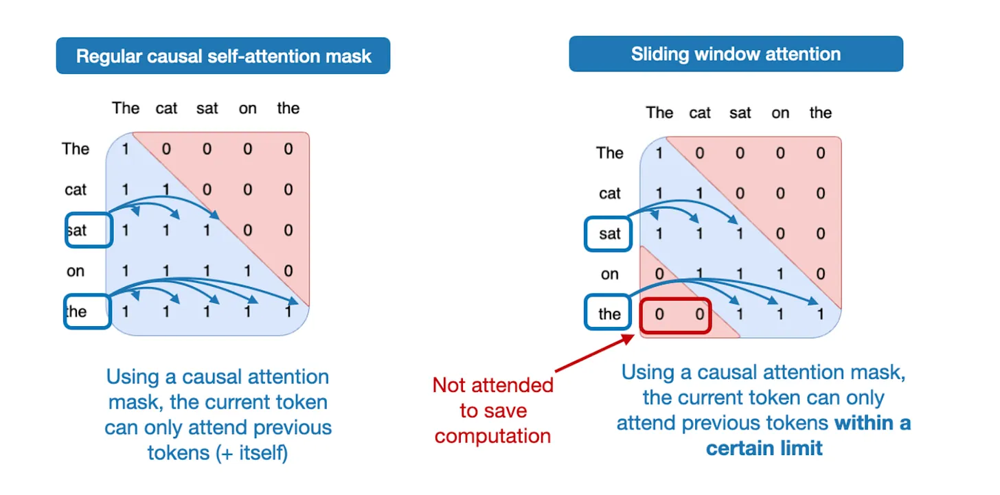
-
Please note that sliding window attention can be used with both Multi-Head Attention and Grouped-Query Attention; Gemma 3 uses grouped-query attention.
-
As mentioned above, sliding window attention is also referred to as local attention because the local window surrounds and moves with the current query position. In contrast, regular attention is global as each token can access all other tokens.
-
Now, as briefly mentioned above, the Gemma 2 predecessor architecture also used sliding window attention before. The difference in Gemma 3 is that they adjusted the ratio between global (regular) and local (sliding) attention.
- For instance, Gemma 2 uses a hybrid attention mechanism that combines sliding window (local) and global attention in a 1:1 ratio. Each token can attend to a 4k-token window of nearby context.
- Where Gemma 2 used sliding window attention in every other layer, Gemma 3 now has a 5:1 ratio, meaning there's only 1 full attention layer for every 5 sliding windows (local) attention layers;moreover, the sliding window size was reduced from 4096 (Gemma 2) to just 1024 (Gemma 3). This shifts the model's focus towards more efficient, localized computations.
-
According to their ablation study, the use of sliding window attention has minimal impact on modeling performance, as shown in the figure below.
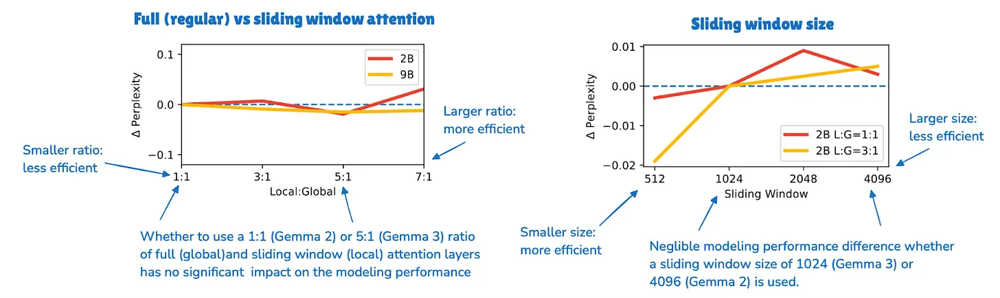
- While sliding window attention is the most notable architecture aspect of Gemma 3, I want to also briefly go over the placement of the normalization layers as a follow-up to the previous OLMo 2 section.
3.2 Normalization Layer Placement in Gemma 3
-
A small but interesting tidbit to highlight is that Gemma 3 uses RMSNorm in both a Pre-Norm and Post-Norm setting around its grouped-query attention module.
-
This is similar to Gemma 2 but still worth highlighting, as it differs from
- the Post-Norm used in the original transformer (“Attention is all you need”),
- the Pre-Norm, which was popularized by GPT-2 and used in many other architectures afterwards,
- and the Post-Norm flavor in OLMo 2 that we saw earlier.
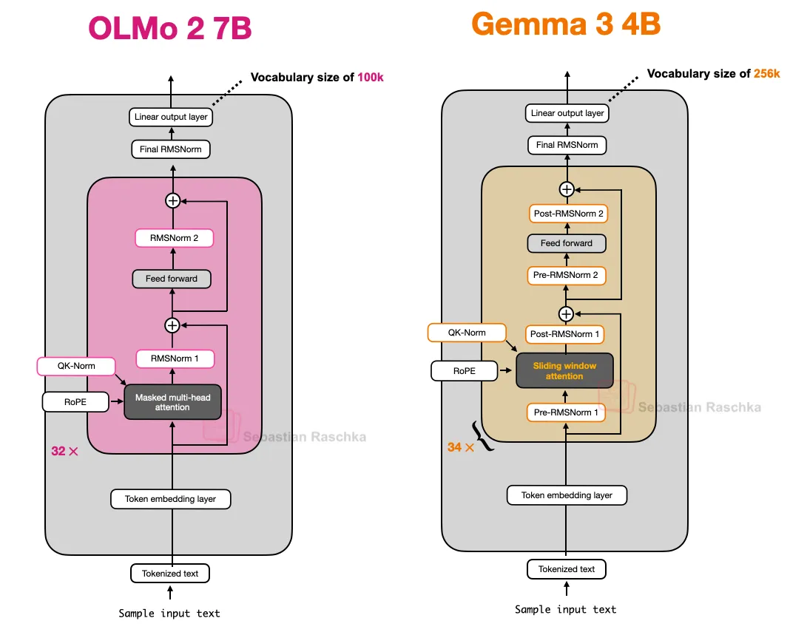
- I think this normalization layer placement is a relatively intuitive approach as it gets the best of both worlds: Pre-Norm and Post-Norm.
- In my opinion, a bit of extra normalization can't hurt.
- In the worst case, if the extra normalization is redundant, this adds a bit of inefficiency through redundancy.
- In practice, since RMSNorm is relatively cheap in the grand scheme of things, this shouldn't have any noticeable impact, though.
3.3 Gemma 3 Summary
- Gemma 3 is a well-performing open-weight LLM that, in my opinion, is a bit underappreciated in the open-source circles.
- The most interesting part is the use of sliding window attention to improve efficiency (it will be interesting to combine it with MoE in the future).
- Also, Gemma 3 has a unique normalization layer placement, placing RMSNorm layers both before and after the attention and FeedForward modules.
3.4 Bonus: Gemma 3n
- A few months after the Gemma 3 release, Google shared Gemma 3n, which is a Gemma 3 model that has been optimized for small-device efficiency with the goal of running on phones.
- One of the changes in Gemma 3n to achieve better efficiency is the so-called Per-Layer Embedding (PLE) parameters layer.
- The key idea here is to keep only a subset of the model's parameters in GPU memory. Token-layer specific embeddings, such as those for text, audio, and vision modalities, are then streamed from the CPU or SSD on demand.
- The figure below illustrates the PLE memory savings, listing 5.44 billion parameters for a standard Gemma 3 model. This likely refers to the Gemma 3 4-billion variant.

-
The 5.44 vs. 4 billion parameter discrepancy is because Google has an interesting way of reporting parameter counts in LLMs. They often exclude embedding parameters to make the model appear smaller, except in cases like this, where it is convenient to include them to make the model appear larger. This is not unique to Google, as this approach has become a common practice across the field.
-
Another interesting trick is the MatFormer concept (short for Matryoshka Transformer).
- For instance, Gemma 3n uses a single shared LLM (transformer) architecture that can be sliced into smaller, independently usable models. Each slice is trained to function on its own, so at inference time, we can run just the part you need (instead of the large model).
4. (skip) Mistral Small 3.1
5. Llama 4 (Meta AI)
- The extensive introductory discussion on Mixture-of-Experts (MoE) earlier in this article pays off again.
- Llama 4 has also adopted an MoE approach and otherwise follows a relatively standard architecture that is very similar to DeepSeek V3, as shown in the figure below.
- Llama 4 includes native multimodal support, similar to models like Gemma and Mistral. However, since this article focuses on language modeling, we only focus on the text model.
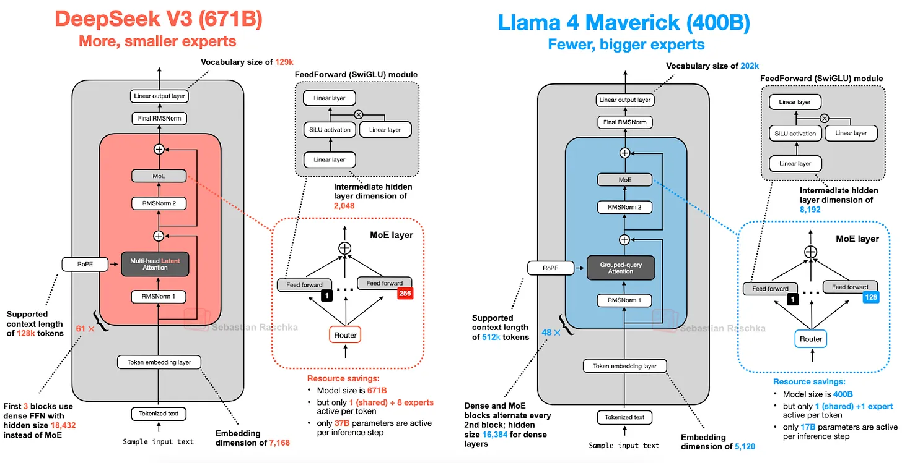
-
While the Llama 4 Maverick architecture looks very similar to DeepSeek V3 overall, there are some interesting differences worth highlighting.
- First, Llama 4 uses Grouped-Query Attention similar to its predecessors, whereas DeepSeek V3 uses Multi-Head Latent Attention, which we discussed at the beginning of this article.
- Now, both DeepSeek V3 and Llama 4 Maverick are very large architectures, with DeepSeek V3 being approximately 68% larger in its total parameter count.
- However, with 37 billion active parameters, DeepSeek V3 has more than twice as many active parameters as Llama 4 Maverick (17B).
-
Llama 4 Maverick uses a more classic MoE setup with fewer but larger experts (2 active experts with 8,192 hidden size each) compared to DeepSeek V3 (9 active experts with 2,048 hidden size each).
- Also, DeepSeek uses MoE layers in each transformer block (except the first 3), whereas Llama 4 alternates MoE and dense modules in every other transformer block.
-
Given the many small differences between architectures, it is difficult to determine their exact impact on final model performance.
- The main takeaway, however, is that MoE architectures have seen a significant rise in popularity in 2025.
6. Qwen3 (Alibaba Cloud)
-
The Qwen team consistently delivers high-quality open-weight LLMs.
- When I helped co-advising the LLM efficiency challenge at NeurIPS 2023, I remember that the top winning solutions were all Qwen2-based.
-
Now, Qwen3 is another hit model series at the top of the leaderboards for their size classes.
- There are 7 dense models: 0.6B, 1.7B, 4B, 8B, 14B, and 32B. And there are 2 MoE models: 30B-A3B, and 235B-A22B.
6.1 Qwen3 (Dense)
- Let's discuss the dense model architecture first.
- As of this writing, the 0.6B model may well be the smallest current-generation open-weight model out there. And based on my personal experience, it performs really well given its small size.
- It has great token/sec throughput and a low memory footprint if you are planning to run it locally. But what's more, it's also easy to train locally (for educational purposes) due to its small size.
- So, Qwen3 0.6B has replaced Llama 3 1B for me for most purposes. A comparison between these two architectures is shown below.
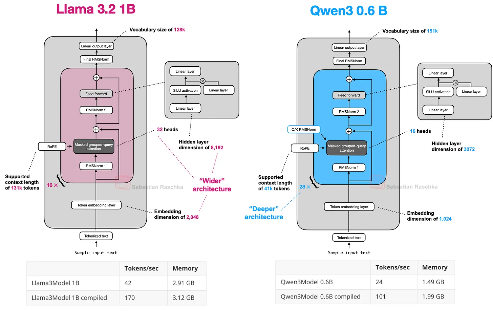
-
If you are interested in a human-readable Qwen3 implementation without external third-party LLM library dependencies, I recently implemented Qwen3 from scratch (in pure PyTorch).
-
The computational performance numbers in the figure above are based on my from-scratch PyTorch implementations when run on an A100 GPU.
- As one can see, Qwen3 has a smaller memory footprint as it is a smaller architecture overall, but also uses smaller hidden layers and fewer attention heads.
- However, it uses more transformer blocks than Llama 3, which leads to a slower runtime (lower tokens/sec generation speed).
6.2 Qwen3 (MoE)
-
As mentioned earlier, Qwen3 also comes in two MoE flavors: 30B-A3B and 235B-A22B. Why do some architectures, like Qwen3, come as regular (dense) and MoE (sparse) variants?
- As mentioned at the beginning of this article, MoE variants help reduce inference costs for large base models. Offering both dense and MoE versions gives users flexibility depending on their goals and constraints.
- Dense models are typically more straightforward to fine-tune, deploy, and optimize across various hardware.
- On the other hand, MoE models are optimized for scaling inference. For instance, at a fixed inference budget, they can achieve a higher overall model capacity (i.e., knowledge uptake during training due to being larger) without proportionally increasing inference costs.
-
By releasing both types, the Qwen3 series can support a broader range of use cases: dense models for robustness, simplicity, and fine-tuning, and MoE models for efficient serving at scale.
-
To round up this section, let's look at Qwen3 235B-A22B (note that the A22B stands for "22B active parameters) to DeepSeek V3, which has almost twice as many active parameters (37B).
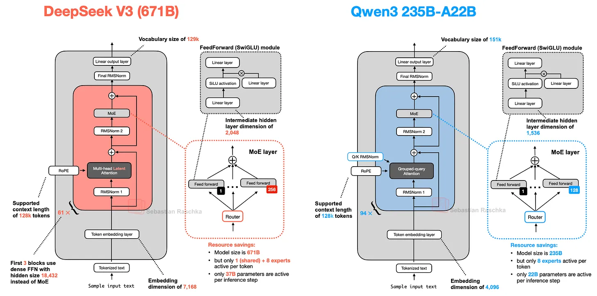
- As shown in the figure above, the DeepSeek V3 and Qwen3 235B-A22B architectures are remarkably similar. What's noteworthy, though, is that the Qwen3 model moved away from using a shared expert (earlier Qwen models, such as Qwen2.5-MoE did use a shared expert).
- Unfortunately, the Qwen3 team did not disclose any reason as to why they moved away from shared experts.
- If I had to guess, it was perhaps simply not necessary for training stability for their setup when they increased the experts from 2 (in Qwen2.5-MoE) to 8 (in Qwen3). And then they were able to save the extra compute/memory cost by using only 8 instead of 8+1 experts. (However, this doesn't explain why DeepSeek V3 is still keeping their shared expert.)
Junyang Lin: At that moment we did not find significant enough improvement on shared expert and we were worrying about the optimization for inference caused by shared expert. No straight answer to this question honestly.
7. SmolLM3 (Hugging Face)
-
SmolLM3 is perhaps not as nearly as popular as the other LLMs covered in this article, but I thought it is still an interesting model to include as it offers really good modeling performance at a relatively small and convenient 3-billion parameter model size that sits between the 1.7B and 4B Qwen3 model, as shown in the figure below.
-
Moreover, it also shared a lot of the training details, similar to OLMo, which is rare and always appreciated!

- As shown in the architecture comparison figure below, the SmolLM3 architecture looks fairly standard. The perhaps most interesting aspect is its use of NoPE (No Positional Embeddings), though.

7.1 No Positional Embeddings (NoPE)
-
NoPE is, in LLM contexts, an older idea that goes back to a 2023 paper (The Impact of Positional Encoding on Length Generalization in Transformers) to remove explicit positional information injection (like through classic absolute positional embedding layers in early GPT architectures or nowadays RoPE).
-
In transformer-based LLMs, positional encoding is typically necessary because self-attention treats tokens independently of order.
- Absolute position embeddings solve this by adding an additional embedding layer that adds information to the token embeddings.
- RoPE, on the other hand, solves this by rotating the query and key vectors relative to their token position.
-
In NoPE layers, however, no such positional signal is added at all: not fixed, not learned, not relative. Nothing.
-
Even though there is no positional embedding, the model still knows which tokens come before, thanks to the causal attention mask.
- This mask prevents each token from attending to future ones. As a result, a token at position \(t\) can only see tokens at positions \(\le t\), which preserves the autoregressive ordering.
-
So while there is no positional information that is explicitly added, there is still an implicit sense of direction baked into the model's structure, and the LLM, in the regular gradient-descent-based training, can learn to exploit it if it finds it beneficial for the optimization objective. (Check out the NoPE paper's theorems for more information.)
-
So, overall, the NoPE paper not only found that no positional information injection is necessary, but it also found that NoPE has better length generalization, which means that LLM answering performance deteriorates less with increased sequence length, as shown in the figure below.

-
Note that the experiments shown above were conducted with a relatively small GPT-style model of approximately 100 million parameters and relatively small context sizes. It is unclear how well these findings generalize to larger, contemporary LLMs.
-
For this reason, the SmolLM3 team likely only "applied" NoPE (or rather omitted RoPE) in every 4th layer.
8. Kimi K2 (Moonshot AI)
-
Kimi K2 recently made big waves in the AI community due to being an open-weight model with an incredibly good performance. According to benchmarks, it's on par with the best proprietary models like Google's Gemini, Anthropic's Claude, and OpenAI's ChatGPT models.
-
A notable aspect is its use of a variant of the relatively new Muon optimizer over AdamW.
- As far as I know, this is the first time Muon was used over AdamW for any production model of this size (previously, it has only been shown to scale up to 16B).
- This resulted in very nice training loss curves, which probably helped catapult this model to the top of the aforementioned benchmarks.
-
While people commented that the loss was exceptionally smooth (due to the lack of spikes), I think it's not exceptionally smooth (e.g., see the OLMo 2 loss curve in the figure below; also, the L2 norm of the gradient would probably be a better metric to track training stability). However, what's remarkable is how well the loss curve decays.
-
However, as mentioned in the introduction of this article, training methodologies are a topic for another time.

-
The model itself is 1 trillion parameters large, which is truly impressive.
-
It may be the biggest LLM of this generation as of this writing (given the constraints that Llama 4 Behemoth is not released, proprietary LLMs don't count, and Google's 1.6 trillion Switch Transformer is an encoder-decoder architecture from a different generation).
-
It's also coming full circle as Kimi K2 uses the DeepSeek V3 architecture we covered at the beginning of this article except they made it larger, as shown in the figure below.
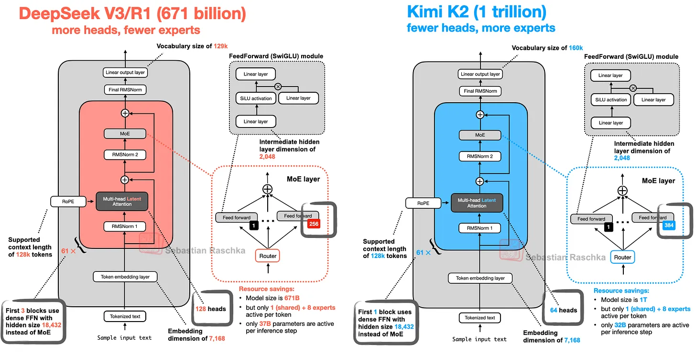
-
As shown in the figure above, Kimi K2 is basically the same as DeepSeek V3, except that it uses more experts in the MoE modules and fewer heads in the Multi-head Latent Attention (MLA) module.
-
Kimi K2 is not coming out of nowhere. The earlier Kimi 1.5 model discussed in the Kimi k1.5: Scaling Reinforcement Learning with LLMs paper, was impressive as well. However, it had the bad luck that the DeepSeek R1 model paper was published on exactly the same date on January 22nd. Moreover, as far as I know, the Kimi 1.5 weights were never publicly shared.
-
So, most likely the Kimi K2 team took these lessons to heart and shared Kimi K2 as an open-weight model, before DeepSeek R2 was released. As of this writing, Kimi K2 is the most impressive open-weight model.
-
Update: On Nov 6, 2025 the Kimi K2 team also released their new “Thinking” model variant. The architecture is unchanged from Kimi K2 above, except that they extended the context size from 128k to 256k.
-
According to the benchmarks shared by the Kimi team, the model exceeds the performance of the leading proprietary LLMs. (Unfortunately, there is no direct comparison to DeepSeek R1.)
9. GPT-OSS (OpenAI)
-
OpenAI’s released gpt-oss-120b and gpt-oss-20b, their first open-weight models since GPT-2 in 2019, about one week after I wrote this article.
- Since OpenAI’s open-weight models have been so widely anticipated, I updated this article to include them. I will keep this section brief, but I have written another, much more detailed article dedicated to the gpt-oss models here:
-
Before summarizing the interesting tidbits, let's start with an overview of the two models, gpt-oss-20b and gpt-oss-120b.
-
The architecture contains all the familiar components we have seen in other architectures discussed previously. For instance, Figure 27 puts the smaller gpt-oss architecture next to Qwen3 30B-A3B, which is also an MoE model with a similar number of active parameters (gpt-oss has 3.6B active parameters, and Qwen3 30B-A3B has 3.3B).
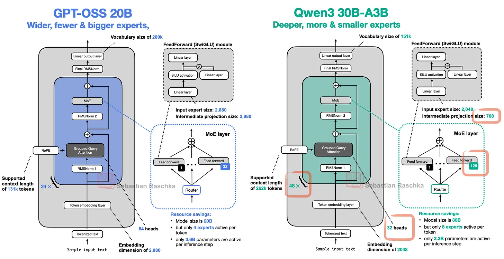
- One aspect not shown in Figure 27 is that gpt-oss uses sliding window attention (similar to Gemma 3, but in every other layer instead of using a 5:1 ratio).
9.1 Width Versus Depth
-
Figure 27 shows that gpt-oss and Qwen3 use similar components. But if we look at the two models closely, we see that Qwen3 is a much deeper architecture with its 48 transformer blocks instead of 24.
-
On the other hand, gpt-oss is a much wider architecture: An embedding dimension of 2880 instead of 2048. An intermediate expert (feed forward) projection dimension of also 2880 instead of 768
-
It's also worth noting that gpt-oss uses twice as many attention heads, but this doesn't directly increase the model's width. The width is determined by the embedding dimension.
-
Does one approach offer advantages over the other given a fixed number of parameters?
- As a rule of thumb, deeper models have more flexibility but can be harder to train due to instability issues, due to exploding and vanishing gradients (which RMSNorm and shortcut connections aim to mitigate).
- Wider architectures have the advantage of being faster during inference (with a higher tokens/second throughput) due to better parallelization at a higher memory cost.
-
When it comes to modeling performance, there's unfortunately no good apples-to-apples comparison I am aware of (where parameter size and datasets are kept constant) except for an ablation study in the Gemma 2 paper (Table 9), which found that for a 9B parameter architecture, a wider setup is slightly better than a deeper setup. Across 4 benchmarks, the wider model achieved a 52.0 average score, and the deeper model achieved a 50.8 average score.
9.2 Few Large Versus Many Small Experts
-
As shown in Figure 27 above, it's also noteworthy that gpt-oss has a surprisingly small number of experts (32 instead of 128), and only uses 4 instead of 8 active experts per token. However, each expert is much larger than the experts in Qwen3.
-
This is interesting because the recent trends and developments point towards more, smaller models as being beneficial. This change, at a constant total parameter size, is nicely illustrated in Figure 28 below from the DeepSeekMoE paper.

- Notably, unlike DeepSeek's models, neither gpt-oss nor Qwen3 uses shared experts, though.
9.3 Attention Bias and Attention Sinks
-
Both gpt-oss and Qwen3 use grouped query attention. The main difference is that gpt-oss restricts the context size via sliding window attention in each second layer, as mentioned earlier.
-
However, there's one interesting detail that caught my eye. It seems that gpt-oss uses bias units for the attention weights, as shown in Figure 29 below.

- I haven't seen these bias units being used since the GPT-2 days, and they are commonly regarded as redundant. Indeed, I found a recent paper that shows mathematically that this is at least true for the key transformation (k_proj). Furthermore, the empirical results show that there is little difference between with and without bias units (see Figure 30 below).

-
Another detail you may have noticed is the definition of sinks in the code screenshot in Figure 30. In general models, attention sinks are special "always-attended" tokens placed at the start of the sequence to stabilize attention, which is especially useful in long-context scenarios.
- I.e., if the context gets very long, this special attended token at the beginning is still attended to, and it can learn to store some generally useful information about the entire sequence. (I think it was originally proposed in the Efficient Streaming Language Models with Attention Sinks paper.)
-
In the gpt-oss implementation, attention sinks are not actual tokens in the input sequence. Instead, they are learned per-head bias logits that are appended to the attention scores (Figure 31). The goal is the same as with the above-mentioned attention sinks, but without modifying the tokenized inputs.
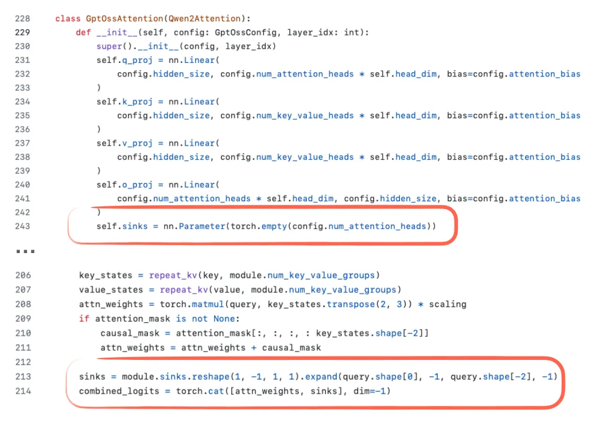
10. Grok 2.5 (xAI)
-
A few weeks after this article first went online, xAI released the weights of their 270B-parameter Grok 2.5 model.
-
I thought it would be worth including here, since Grok 2.5 was xAI's flagship production model last year. Up to this point, all models we discussed were released as open-weight models from the start. For example, gpt-oss is likely not an open-weight clone of GPT-4 but rather a custom model trained specifically for the open-source community.
-
With Grok 2.5, we get a rare look at a real production system, even if it is last year's.
-
Architecturally, Grok 2.5 looks fairly standard overall (Figure 32), but there are a few noteworthy details.
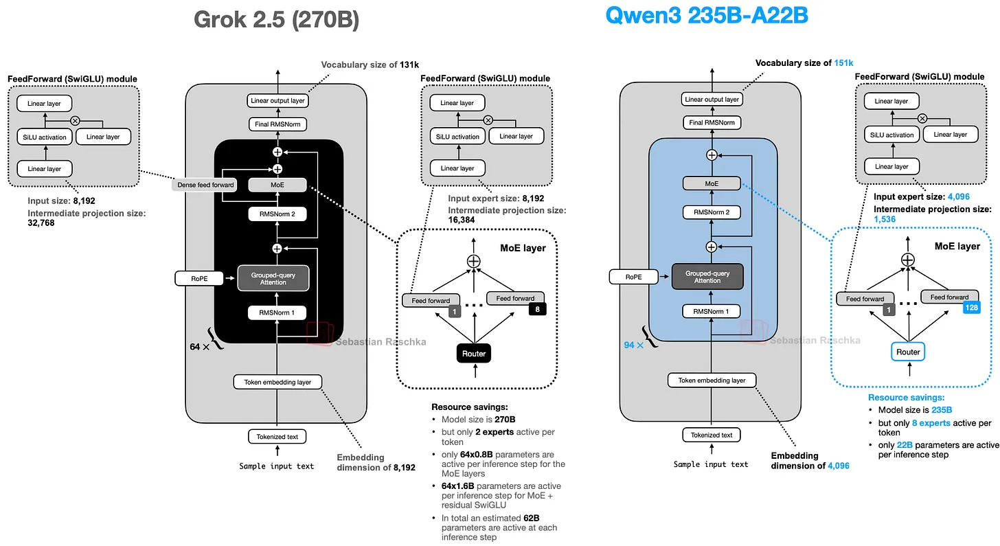
-
For instance, Grok 2.5 uses a small number of large experts (eight), which reflects an older trend. As discussed earlier, more recent designs such as those in the DeepSeekMoE paper favor a larger number of smaller experts (this is also present in Qwen3).
-
Another interesting choice is the use of what amounts to a shared expert. The additional SwiGLU module shown on the left in Figure 32 functions as an always-on, shared expert. It is not identical to the classic shared-expert design since its intermediate dimension is doubled, but the idea is the same. (I still find it interesting that Qwen3 omitted shared experts, and it will be interesting to see if that changes with Qwen4 and later models.)
11. GLM-4.5 (Zhipu AI)
-
GLM-4.5 is another major release this year.
-
It is an instruction/reasoning hybrid similar to Qwen3, but even better optimized for function calling and agent-style contexts.
-
As shown in Figure 34, GLM-4.5 comes in two variants. The flagship 355-billion-parameter model outperforms Claude 4 Opus on average across 12 benchmarks and trails only slightly behind OpenAI’s o3 and xAI’s Grok 4. There is also GLM-4.5-Air, a more compact 106-billion-parameter version that delivers performance only marginally below the 355-billion model.
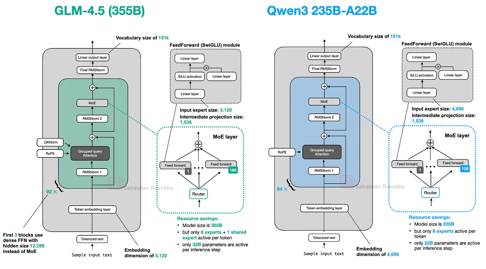
-
The designs are largely similar, but GLM-4.5 adopts a structural choice first introduced by DeepSeek V3:
- 3 dense layers precede the Mixture-of-Experts (MoE) blocks.
- Why? Starting with several dense layers improves convergence stability and overall performance in large MoE systems. If MoE routing is introduced immediately, the instability of sparse expert selection can interfere with early syntactic and semantic feature extraction.
- So, one might say that by keeping the initial layers dense ensures the model forms stable low-level representations before routing decisions begin to shape higher-level processing.
-
Also, GLM-4.5 uses a shared expert similar to DeepSeek V3 (and unlike Qwen3).
- Interestingly, GLM-4.5 also retains the attention bias mechanism used in GPT-2 and gpt-oss.
12. Qwen3-Next (Alibaba Cloud)
- On 11 September 2025, the Qwen3 team released Qwen3 Next 80B-A3B (Figure 35), available in both Instruct and Thinking variants. While its design builds on the previously discussed Qwen3 architecture, I included it here as a separate entry to keep the figure numbering consistent and to draw attention to some of its design changes.
12.1 Expert Size and Number
- The new Qwen3 Next architecture stands out because, despite being 3× smaller than the previous 235B-A22B model (Figure 35), it introduces four times as many experts and even adds a shared expert.
- Both of these design choices (a high expert count and the inclusion of a shared expert) were future directions I had highlighted prior to this release, particularly in the video version of the article that I linked at the top.
12.2 Gated DeltaNet + Gated Attention Hybrid
-
The other highlight is that they replace the regular attention mechanism by a Gated DeltaNet + Gated Attention hybrid, which helps enable the native 262k token context length in terms of memory usage (the previous 235B-A22B model model supported 32k natively, and 131k with YaRN scaling.)
-
So how does this new attention hybrid work? Compared to grouped‑query attention (GQA), which is still standard scaled dot‑product attention (sharing K/V across query‑head groups to cut KV‑cache size and memory bandwidth as discussed earlier but whose decode cost and cache still grow with sequence length), their hybrid mechanism mixes Gated DeltaNet blocks with Gated Attention blocks with in a 3:1 ratio as shown in Figure 36.

-
We can think of the gated attention block as standard scaled-dot-product attention that can be used in GQA, but it has a few tweaks on top. The main differences between gated attention and plain GQA block are:
- an output gate (sigmoid-controlled, usually per-channel) that scales the attention result before it is added back to the residual;
- zero-centered RMSNorm for QKNorm, rather than a standard RMSNorm;
- partial RoPE (on a subset of dimensions).
-
Note that these are essentially just stability changes to GQA.
-
The Gated DeltaNet is a more significant change. In the DeltaNet block, \(q, k, v\) and two gates \((\alpha, \beta)\) are produced by linear and lightweight convolutional layers with normalization, and the layer replaces attention with a fast‑weight delta rule update.
-
However, the tradeoff is that DeltaNet offers less precise content‑based retrieval than full attention, which is why one gated attention layer remains.
-
Given that attention grows quadratically, the DeltaNet component was added to help with memory efficiency. In the "linear-time, cache-free" family, the DeltaNet block is a essentially an alternative to Mamba.
- Mamba keeps a state with a learned state-space filter (essentially a dynamic convolution over time).
- DeltaNet keeps a tiny fast-weight memory updated with \(\alpha\) and \(\beta\) and reads it with \(q\), with small convolutions only used only to help form \(q, k, v, \alpha, \beta\).
12.3 Multi-Token Prediction
-
The two subsections above describe two design decisions geared towards efficiency. Since all good things come in threes, the Qwen3 also adds another efficiency-technique on top: Multi-Token Prediction (MTP).
-
Note that DeepSeek V3 & V3.2, and later GLM-4.5 and MiniMax-M2 all use MTP during training; however, since it’s a training technique, I haven’t explicitly discussed it in the architecture comparisons.
-
Multi-token prediction trains the LLM to predict several future tokens, instead of a single one, at each step. Here, at each position \(t\), small extra heads (linear layers) output logits for \(t+1 ... t+k\), and we sum cross-entropy losses for these offsets (in the MTP paper the researchers recommended \(k=4\)). This additional signal speeds up training, and inference may remain at generating one token at a time. However, the extra heads can be used in speculative multi-token decoding, which is what Qwen3-Next seems to do, however, the details are still a bit sparse:
- Qwen3-Next introduces a native Multi-Token Prediction (MTP) mechanism, which not only yields an MTP module with a high acceptance rate for Speculative Decoding but also enhances the overall performance. Additionally, Qwen3-Next specifically optimizes the multi-step inference performance of MTP, further improving the acceptance rate of Speculative Decoding in real scenarios through multi-step training that maintains consistency between training and inference. Souce: Qwen3-Next blog post
12.4 Qwen3-Coder-Next
-
In early February 2026, the Qwen3 team shared the 80B Qwen3-Coder-Next model (3B parameters active), which made big headlines for outperforming much larger models like DeepSeek V3.2 (37B active) and Kimi K2.5 and GLM-7.5 (both 32B active) on coding tasks.
-
Moreover, the Qwen3-Coder-Next SWE-Bench Pro Performance is roughly on par with Claude-Sonnet-4.5 (and only slightly below Claude-Opus-4.5), which is impressive for an open-weight model!
-
Note that the architecture behind Qwen3-Coder-Next is exactly the same as Qwen3-Next 80B, which we discussed above (in fact, they used Qwen3-Next as a base model to train Qwen3-Coder-Next. Since this is an article about LLM architectures, the training details are outside the scope. However, interested readers can find more information in their detailed technical report on GitHub.)
13. (skip) MiniMax-M2
14. (skip) Kimi Linear (Moonshot AI)
15. (skip) Olmo 3 (Allen Institute for AI)
16. DeepSeek V3.2
-
This article started with DeepSeek V3, which was released back in December 2024. There have been multiple DeepSeek releases back then, but I largely skipped them as they were not big flagship-model releases like DeepSeek V3 and DeepSeek R1.
-
However, DeepSeek V3.2 was a really big release as it is on par with the current GPT-5.1 and Gemini 3.0 Pro models on certain benchmarks.
-
The architecture is overall similar to DeepSeek V3 but they added a sparse attention mechanism to improve efficiency.
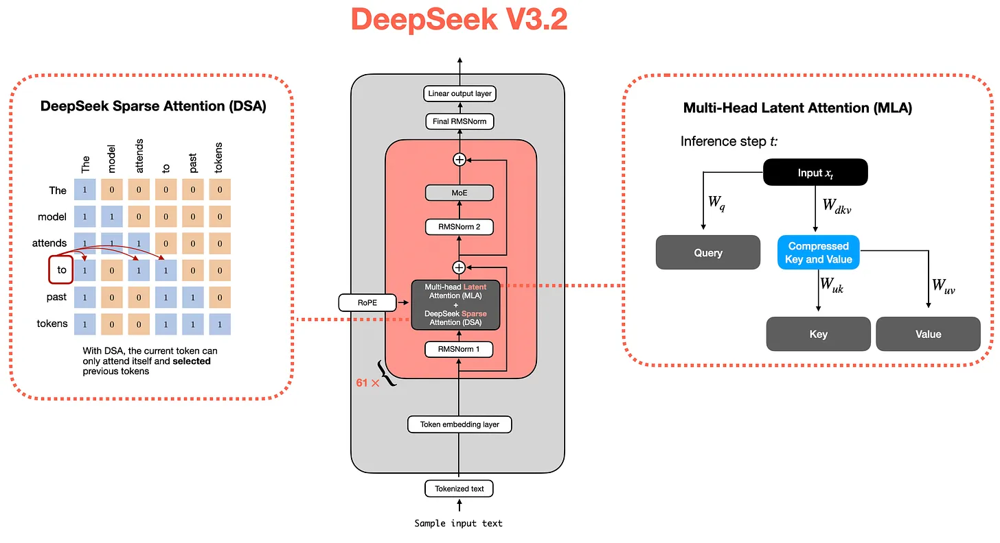
- I originally planned to write a short section about DeepSeek V3.2 for this article, but it turned into a >5000 word write-up, so I moved it to a separate article
17. (skip) Mistral 3
18. Nemotron 3 (NVIDIA)
-
This article is not an exhaustive list of all LLMs out there. To keep it manageable, I am focusing on the main highlights. Here, “highlights” means that they are either very popular, perform very well, or have an interesting architecture component.
-
That being said, it’s time to finally add one of NVIDIA’s models to this list. NVIDIA just released their newest entry in the Nemotron series, Nemotron 3, on December 15th, 2025. What’s nice about Nemotron is, is that it doesn’t come with just the open weights and a technical report, but NVIDIA also shares the dataset and training code similar to Olmo 3.
-
According to the announcement article, Nemotron 3 comes in three sizes: Nano (30B-A3B), Super (100B), (later, this was updated to 120B, see section 18.1) and Ultra (500B).
18.1 Nemotron 3 Nano
- Architecture-wise, the models are a Mixture-of-Experts (MoE) Mamba-Transformer hybrid architecture. As of this writing (Dec 17), only the Nano model has been released as open-weight model, so the discussion below will focus on it, as illustrated in the figure below.
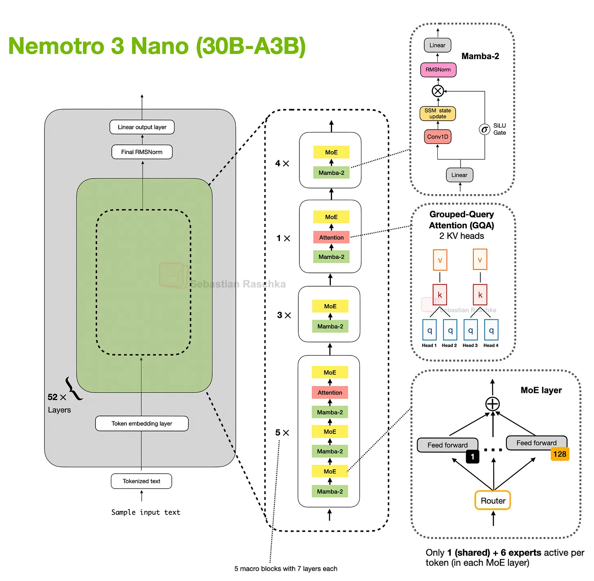
-
As illustrated above, Nemotron 3 Nano (30B-A3B) is a 52-layer hybrid Mamba-Transformer model that interleaves Mamba-2 sequence-modeling blocks with sparse Mixture-of-Experts (MoE) feed-forward layers, and uses self-attention only in a small subset of layers.
-
There’s a lot going on in the figure above, but in short, the architecture is organized into 13 macro blocks with repeated Mamba-2 → MoE sub-blocks, plus a few Grouped-Query Attention layers. In total, if we multiply the macro- and sub-blocks, there are 52 layers in this architecture
-
Regarding the MoE modules, each MoE layer contains 128 experts but activates only 1 shared and 6 routed experts per token.
-
The Mamba-2 layers would take a whole article itself to explain (perhaps a topic for another time). But for now, conceptually, you can think of them as similar to the Gated DeltaNet approach that Qwen3-Next and Kimi-Linear use, which I introduced above. You can also read more about it in my other Beyond Standard LLMs article
-
The similarity between Gated DeltaNet and Mamba-2 layers is that both replace standard attention with a gated-state-space update. The idea behind this state-space-style module is that it maintains a running hidden state and mixes new inputs via learned gates. In contrast to attention, it scales linearly instead of quadratically with the input sequence length.
-
What’s actually quite exciting about this architecture is its really good performance compared to pure transformer architectures of similar size, while achieving much higher tokens-per-second throughput.
-
Overall, this is an interesting direction, even more extreme than Qwen3-Next and Kimi-Linear in its use of only a few attention layers. However, one of the strengths of the transformer architecture is its performance at a (really) large scale. I am curious to see how Nemotron 3 Super and especially Ultra will compare to the likes of DeepSeek V3.2.
18.2 Nemotron 3 Super
-
On March 11, 2026, NVIDIA now also released the 120B Super version as open-weight models on the Hugging Face Hub alongside a nice new “Super”-focused technical report.
-
Compared to the Nano model, besides scaling the architecture, there are two main modifications to the architecture.
-
First Nemotron 3 Super uses Multi-Token Prediction (MTP), which is a technique that trains the LLM to predict multiple future tokens at each step, rather than a single one.
- Instead of training the model only with the standard next-token objective, MTP also trains it to predict multiple future token offsets from the same position. This provides a richer training signal and, according to the Super report, improves both modeling quality and inference efficiency.
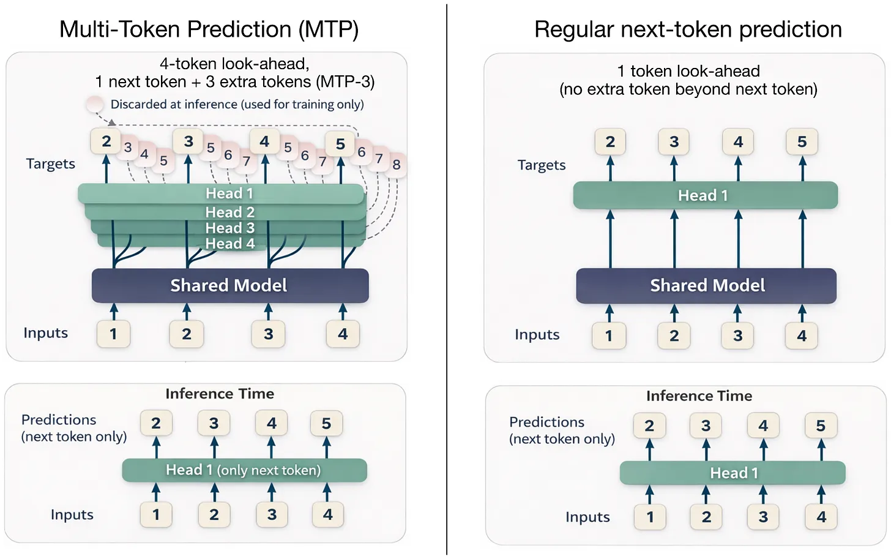
-
A key difference from the standard uses of MTP (which I've drawn in figure 51.2 above) is that Nemotron 3 Super does not use it only during training.
-
The Nemotron 3 Super explicitly uses MTP at inference time as well, where the shared-weight MTP head acts as an internal draft model for native speculative decoding. During generation, the model can then propose candidate continuations and then verify them with the main model. This reduces inference latency without needing a separate external draft model.
-
Since this is not quite standard MTP, it is perhaps more accurate to describe Nemotron 3 Super as using shared-weight MTP for speculative decoding than to call it something like “MTP-3” like in other architectures (like Step 3.5 Flash, which I covered here).
-
The second main difference compared to Nano is that the Super architecture uses latent experts, meaning that the experts operate in latent space (the inputs to the MoE layer are down-projected from 4096 to 1024 dimensions, the experts are applied, and then the outputs are up-projected back from 1024 to 4096 dimensions.)
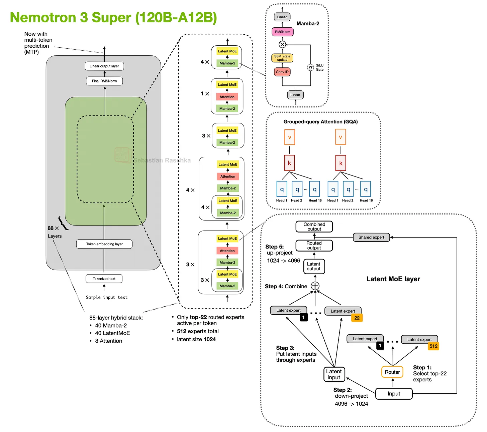
- Benchmark-wise Nemotron 3 Super is on par with Qwen3.5 122B-A10B and GPT-OSS 120B, but the throughput, thanks to the aforementioned “tricks” (MTP, latent MoE, and hybrid attention) is great: 2x faster than Qwen3.5 122B-A10B and (regarding the NVFP4 version) 2.2x faster than GPT-OSS 120B.
19. (skip) MiMo-V2-Flash (Xiaomi)
20. (skip) Trinity Large (Arcee AI)
21. (skip) GLM-5 (Zhipu AI)
23. Gemma 4 (Google DeepMind)
-
After the Nemotron 3 Super release in March, the rest of the month was relatively quiet for flagship open-weight model releases. While I am still waiting for DeepSeek-V4, April at least brought us Google’s Gemma 4.
-
Architecture-wise, Gemma 4 (31B) looks pretty much unchanged compared to Gemma 3 (27B), as illustrated in the figure below.
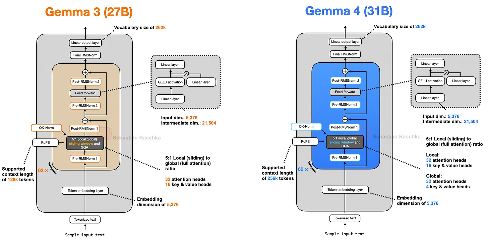
-
(Note that Gemma 4 also has multimodal model support now, but I will leave the image encoder part for a separate article in the future; here, we only focus on the text portion.)
-
As we can see in the figure above,
- Gemma 4 maintains a relatively unique Pre- and Post-norm setup and remains relatively classic,
- with a 5:1 hybrid attention mechanism combining a sliding-window (local) layer and a full-attention (global) layer.
- The attention mechanism itself is also classic Grouped Query Attention (GQA).
-
However, a small change over Gemma 3, which is easy to overlook, is that
- for the global (full) attention layers they reuse the keys in the attention mechanism. I.e., they set values = keys, which should result in further KV cache size reduction.
-
Furthermore, Gemma 4 also uses p-RoPE, where only 25% of the frequency pairs get positional information. This helps with reducing positional noise in long-context situations.
-
But let’s not be fooled by the lack of big(ger) architectural changes. Looking at the benchmarks, Gemma 4 is a huge leap from Gemma 3!
- For instance, on the AI Arena Leaderboard, Gemma 4 (31B) ranks similarly to the much larger Qwen3.5-397B-A17B model. But as I discussed in my model evaluation article (linked below), arena scores are a bit problematic as they can be gamed and are biased towards human (style) preference.
-
However, if we look at some other common benchmarks, which I plotted below, we can see that it’s indeed a very clear leap over Gemma 3 and ranks on par with Qwen3.5 27B.
-
Note that there is also a Mixture-of-Experts (MoE) Gemma 4 variant, which is illustrated below next to a Qwen3 model of similar size.
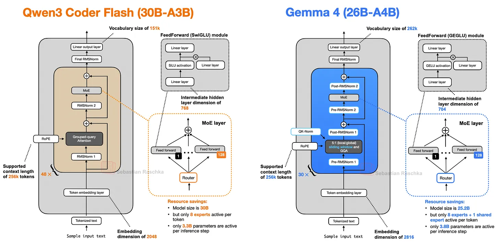
-
As the figure above shows, the approaches are relatively similar except that Gemma 4 uses the unique Pre- and Post-norm placement discussed earlier.
-
Benchmark-wise, the Gemma 4 MoE variant, which has 4B parameters less in total than the Gemma 4 (31B) dense variant, the performances are relatively similar.